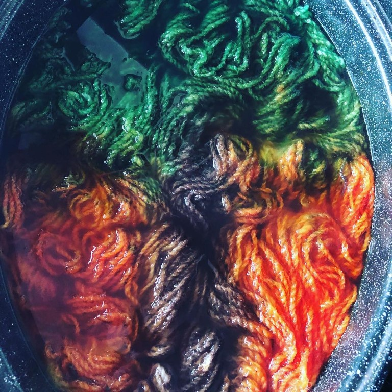
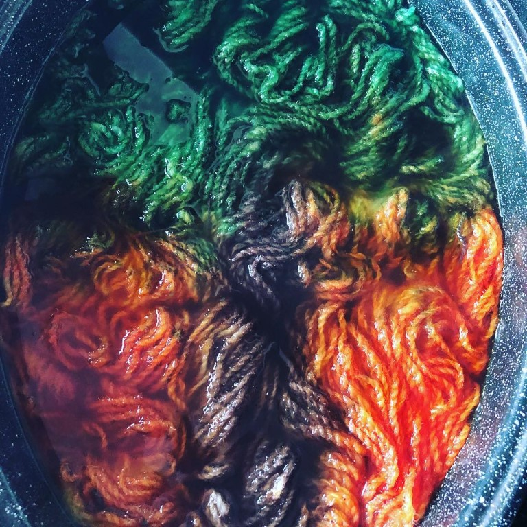

This dyeing process is called the variegated dyeing method.
- First heat your pan of water and acid until close to boiling. Soak your base yarn in hot water in a seperate container for at least 20 minutes.
- While water is heating, mix your acid dye powder with water and acid solution to create dye stock. Be sure to wear your face mask while handling the dye powder. You will want at least two colours but three is better. Start with a small amount of powder and increase as desired.
- Once water is hot, place your skiens of base yarn into pan and heat the yarn until below boiling point.
- Pour first colour dye over yarn in patches, then pour second colour and the third colour. You can choose to leave white bits or fill the skeins with colour as desired. The colours may mix and create more colours. You can go crazy!
- Cover with a lid and let sit for 30 minutes, ensuring the pot does not boil.
- The water should be clear or close to clear at this point. Grab the yarn with your spoon or tongs by the ties and carefully lift out of the pan and turn them over to ensure even coverage. Pour more dye as needed.
- You can either let the water and yarn cool to ensure you do not burn yourself or you can hook the dyed yarn out by the ties and rinse it. Be sure to rinse in water that is the same temperature as the yarn so you don't shock it as this may felt it.
- Squeeze or spin out water and hang to dry.
Enjoy!

 
